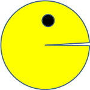
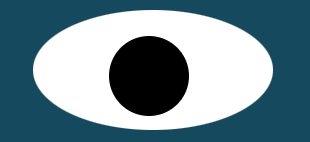

PACMAN EXAMPLE

This project is a Pacman factory. Its not exactly a pacman game. When the project is loaded, multiple pacman can be generated.
EYE EXCERCISE

This is an eye exercise project. This project contains two eyes which would look towards the mouse cursor as long as its inside the browser window.
BUS
This is a bus navigation project. It has a map. It provides the location of bus.